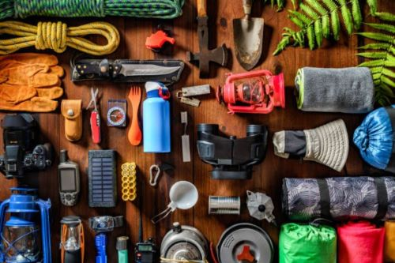
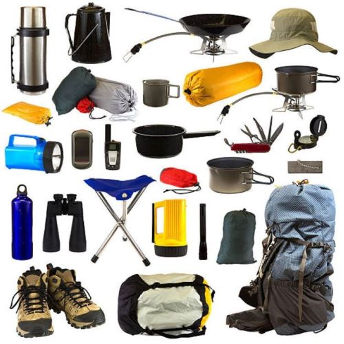
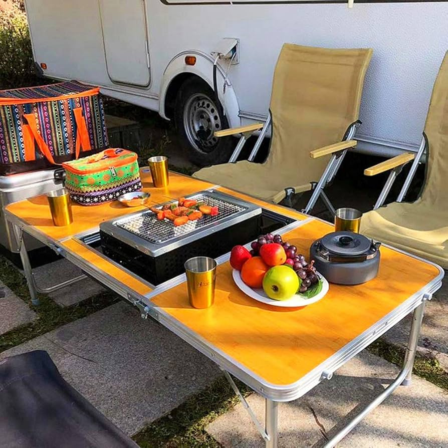

Here are some list of equipments and items you might need when you go out camping.

Campsite
- Tent (and footprint, stakes)
- Sleeping bags
- Sleeping pads
- Camping pillow
- Headlamps or flashlights (and extra batteries)
- Camp chairs
- Camp table (if no picnic table)
- Lantern (and mantles and fuel/batteries if needed)
OPTIONAL:
- Sunshade, tarp or screen house
- Hammock
- Cots
- Sleeping bag liners
- Firewood sourced near campsite
- Camp rug
- Tablecloth and clips (or tape)
- Clothesline with clips
Tool & Repair Items
- Multi-tool
- Duct tape
- Extra cord
- Tent-pole repair sleeve
- Pad/Mattress repair kit
- Mallet or hammer (for hammering tent stakes)
- Saw or axe (for cutting firewood)

Kitchen
- Stove and fuel
- Matches/light/firestarter
- Cook pots (and pot holder)
- Frying pan
- Eating utensils
- Cooking utensils
- Bottle opener, can opener, corkscrew
- Sharp knife
- Plates/bowls
- Mugs/cups
- Cutting board
- Cooler
- Ice or ice substitutes
- Water bottles
- Camp sink or wash bins
- Biodegradable soap
- Pot scrubber/sponge(s)
- Trash/recycling bags
- Dish towel
OPTIONAL:
- Camp grill and fuel
- Grill rack
- Griddle
- Dutch oven
- Charcoal
- Portable coffee/tea maker
- Rolling ice cream maker
- Marshmallow/hot dog roasting forks
- Small food-storage containers/bags/foil
- Large water jugs
- Large, clear plastic bins to store kitchen gear

Campsite Extras
- Most of the following items are optional, though depending on how remote your campsite is.
- Solar and portable power
- Binoculars
- Book/reading material
- Music player with headphones
- Games and toys
- Dog gear
- Dry bags, stuff sacks or clear plastic bins to store items
- Clothing & Footwear
- Moisture-wicking underwear
- Moisture-wicking T-shirts
- Quick-drying pants/shorts
- Long-sleeve shirts (for sun, bugs)
- Lightweight fleece or jacket
- Boots or shoes suited to terrain
- Socks (synthetic or wool)
- Sleepwear
- Additional items for rainy and/or cold weather:
- Rainwear (jacket and pants)
- Long underwear
- Warm insulated jacket or vest
- Fleece pants
- Gloves or mittens
- Warm hat
OPTIONAL:
- Swimsuits
- Water sandals
- In-camp sandals or booties
- Bandanas
- Health & Hygiene
- Toilet paper
- Brush/comb